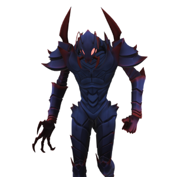

Khepri
背景

在 Queen Vesra 后代不断成长的幼体之中，有一个被封闭的茧。随着新的 Peltapod 幼虫孵化，那一枚蛋只是静静休眠。它没有死亡，而是在多年中持续成长，变得越来越强。Queen Vesra 知道自己无法永远保护族群，于是产下一枚蛋，并无休止地呵护它，日复一日尽可能向其中灌注魔法能量。如果她有一天倒下，那枚蛋便会停止接收她的能量，并最终孵化。
Queen Vesra 可以安心，因为在她逝去后，她珍贵的后代会由一位足够配得上的继承者守护。
策略
Khepri 战斗由 2 个阶段组成。第 2 阶段中，Khepri 会获得大幅提升的机动性和飞行能力。
Khepri 可以释放披萨切刀形状的强力冰攻击，这些攻击最多可连续衔接 3 次。如果第 1 阶段中玩家距离较远，它会投掷极其精准的冰刺，并总是施加 freeze 减益。
第 2 阶段中，如果玩家接近 Khepri，它可能会选择尖叫。紫色半径内的所有人都会被冻结，而它会立即转入飞行。飞行期间，Khepri 既能抓取玩家，也能甩出撕裂般散布的冰投射物，全部都会施加长时间冻结状态。
统计
基础 HP：26000
伤害：物理和冰霜
该 Boss 有两个阶段。
| 属性 | 抗性 |
|---|---|
| 物理 | 中性 (1x) |
| 火焰 | 弱点 (1.25x) |
| 冰霜 | 抗性 (0.75x) |
| 电击 | 中性 (1x) |
| 光耀 | 抗性 (0.75x) |
| 暗影 | 弱点 (1.25x) |
| 毒 | 中性 (1x) |